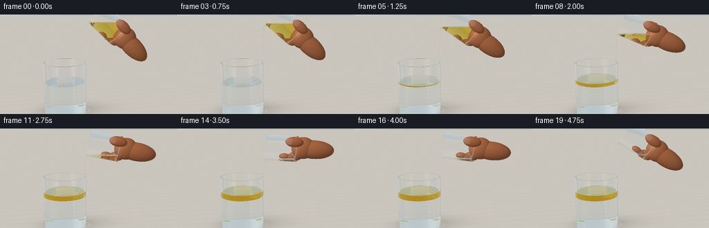
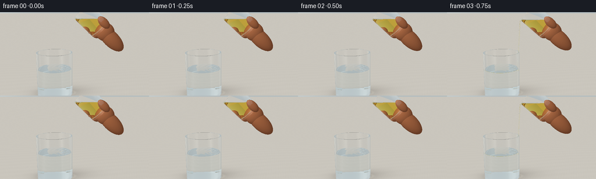
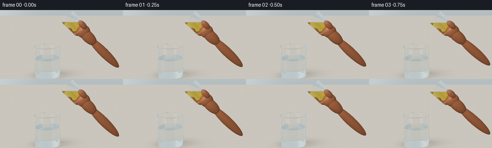

CODING AGENTS AS PIXEL WORLD MODELS
traex/GPT-6.1-Sol · phygen_136
点击播放 · 原生 RGB 像素
逐轮保存的候选
回放视频、检查图与代码变化。
每份候选均可单独播放。实际图片检查记录在下方工具轨迹中。
候选 01播放与检查图
点击播放 · 原生 RGB 像素

展开代码变化
--- 上一保存版本
+++ 本次保存版本
@@ -0,0 +1,355 @@
+"""A self-contained analytic ray tracer for the requested oil-and-water scene.
+Only numpy, Pillow, and the supplied artifact writer are used.
+"""
+from pathlib import Path
+import math, time
+import numpy as np
+from PIL import Image
+from artifact_io import save
+
+ROOT = Path(__file__).resolve().parent
+W, H, SS = 256, 144, 2
+EPS = 2e-4
+INF = np.float32(1e8)
+IOR = np.array([1.0, 1.515, 1.333, 1.468], np.float32)
+ABSORB = np.array([[0,0,0],[.012,.006,.005],[.025,.009,.005],[.075,.29,1.65]], np.float32)
+
+def normalize(v):
+ return v / np.maximum(np.sqrt(np.sum(v*v, axis=-1, keepdims=True)), 1e-12)
+
+def rotation(a):
+ c,s=np.cos(a),np.sin(a)
+ return np.array([[c,-s,0],[s,c,0],[0,0,1]],np.float32)
+
+# Fixed photographic camera. A slightly elevated viewpoint makes both liquid surfaces visible.
+CAM=np.array([.05,3.65,8.3],np.float32)
+TARGET=np.array([.33,1.86,0],np.float32)
+F=normalize(TARGET-CAM)
+RIGHT=normalize(np.cross(F,[0,1,0])).astype(np.float32)
+UP=np.cross(RIGHT,F)
+y,x=np.mgrid[0:H*SS,0:W*SS].astype(np.float32)
+xx=((x+.5)/(W*SS)*2-1)*(W/H)*np.tan(np.deg2rad(25.0)/2)
+yy=(1-(y+.5)/(H*SS)*2)*np.tan(np.deg2rad(25.0)/2)
+RAYS=normalize(F+xx[...,None]*RIGHT+yy[...,None]*UP).reshape(-1,3).astype(np.float32)
+
+# Main tumbler dimensions.
+CENTER=np.array([-.57,0,0],np.float32)
+RO,RI,BASE,TOP=.805,.747,.115,1.94
+WATER=1.205
+# Pouring tumbler dimensions.
+SR,SI,SB,SH=.477,.438,.083,1.16
+
+# Integrate the remaining source oil under its horizontal, gravity-aligned surface.
+q=(np.arange(320)+.5)/320
+ys=SB+q*(SH-SB)
+xs=-SI+q*2*SI
+area_width=2*np.sqrt(np.maximum(0,SI*SI-xs*xs))
+
+def source_volume(a, level, origin):
+ height=origin[1]+xs[:,None]*np.sin(a)+ys[None,:]*np.cos(a)
+ return float(np.sum((height<level)*area_width[:,None])*(2*SI/320)*((SH-SB)/320))
+
+def source_fill_height(a,volume,origin):
+ lo=origin[1]-2; hi=origin[1]+2
+ for _ in range(28):
+ mid=(lo+hi)*.5
+ if source_volume(a,mid,origin)<volume: lo=mid
+ else: hi=mid
+ return (hi+lo)*.5
+
+def environment(o,d, reflection=False):
+ # Broad, defocused studio/kitchen light sources rather than sharp synthetic scenery.
+ dy=d[:,1]
+ c=np.empty_like(d)
+ c[:]=[.69,.72,.72]
+ c += (.10*np.tanh(dy*2))[:,None]*np.array([1,.96,.87])
+ # Large softbox/window, plus a narrow vertical rim-light to the right.
+ left=np.exp(-((d[:,0]+.62)/.22)**4-((d[:,1]-.35)/.63)**4)
+ right=np.exp(-((d[:,0]-.72)/.08)**2-((d[:,1]-.16)/.72)**4)
+ ceiling=np.exp(-((d[:,1]-.88)/.2)**2)*.27
+ c += left[:,None]*np.array([.40,.40,.37])+right[:,None]*.33+ceiling[:,None]
+ if not reflection:
+ # A seamless warm counter with fine, restrained stone/wood grain.
+ t=-o[:,1]/np.minimum(dy,-1e-8)
+ ground=(dy<-.0001)&(t>0)
+ p=o+d*t[:,None]
+ px,pz=p[:,0],p[:,2]
+ noise=(np.sin(px*53+pz*17)+np.sin(px*137-pz*11)+np.sin(px*11+pz*43))*.0017
+ grain=np.sin(px*2.0+pz*12+np.sin(px*.6)*2)*.003
+ color=np.tile(np.array([.765,.748,.710],np.float32),(len(d),1))
+ color+=(noise+grain)[:,None]
+ # Physically grounded contact and soft directional shadows.
+ contact=np.exp(-((px+.57)/.82)**2-(pz/.47)**2)*.20
+ small=np.exp(-((px+.57)/.72)**4-(pz/.27)**2)*.16
+ cast=np.exp(-((px-.10)/1.2)**2-((pz+.25)/.66)**2)*.085
+ color-=(contact+small+cast)[:,None]*np.array([.85,.86,.84])
+ # A quiet caustic beneath the water tumbler.
+ rr=np.sqrt(((px+.50)/.87)**2+(pz/.45)**2)
+ caustic=np.exp(-((rr-.95)/.105)**2)*.053
+ color+=caustic[:,None]*np.array([1,.99,.85])
+ c[ground]=color[ground]
+ # A cool gray gradient on the distant, fully out-of-focus background.
+ far=~ground
+ c[far]=np.array([.67,.709,.720])+(.060*np.tanh(dy[far]*4))[:,None]
+ glow=np.exp(-((d[:,0]+.42)/.20)**2)*.08
+ c[far]+=glow[far,None]*np.array([1,.98,.92])
+ return np.clip(c,0,1.5)
+
+class Scene:
+ def __init__(self, frame, a, origin, source_h, oil_depth, flowing, lip):
+ self.frame=frame; self.a=a; self.org=origin; self.R=rotation(a)
+ self.source_h=source_h; self.oil=oil_depth; self.flowing=flowing
+ self.oiltop=WATER+oil_depth
+ self.lip=lip
+ self.segments=[]
+ self.drops=[]
+ if flowing:
+ # A coherent, thin stream accelerates under gravity and narrows smoothly.
+ # Its small inward trajectory keeps the pour safely inside the water glass.
+ start=lip.copy(); endy=self.oiltop-.055
+ duration=np.sqrt(max(.08,2*(start[1]-endy)/9.81))
+ def trajectory(t):
+ return np.array([start[0]-.22*t, start[1]- .045*t-4.905*t*t,
+ start[2]+.005*np.sin(frame*.55+t*12)],np.float32)
+ ts=np.linspace(0,duration,8)
+ for i in range(7):
+ p=trajectory(ts[i]); z=trajectory(ts[i+1])
+ radius=.032-.011*(ts[i]/duration)
+ self.segments.append((p,z,radius))
+ self.impact=trajectory(duration)
+ # A few tiny oil globules dip just below the surface and rise back up.
+ if frame>2:
+ for j in range(4):
+ age=((frame-3)*.25+j*.28)%1.05
+ depth=.23*(1-age/1.05)
+ rad=.028+.016*np.sin(j*1.6+1)**2
+ pos=np.array([self.impact[0]-.035-.09*age+.055*np.sin(j*2),
+ WATER-depth,self.impact[2]+.08*np.cos(j*2.4)],np.float32)
+ if pos[0]<CENTER[0]+RI-.06:
+ self.drops.append((pos,np.array([rad,rad*1.12,rad],np.float32)))
+ else:
+ self.impact=np.array([.16,self.oiltop,0],np.float32)
+
+ def nearest(self, o, d):
+ n=len(o)
+ dist=np.full(n,INF,np.float32)
+ norm=np.zeros((n,3),np.float32)
+ outside=np.zeros(n,np.int8); inside=np.zeros(n,np.int8)
+ kind=np.zeros(n,np.int8)
+ def add(t,N,ni,no,k=0):
+ valid=(t>EPS)&(t<dist)
+ if not np.any(valid): return
+ dist[valid]=t[valid]
+ norm[valid]=N[valid] if isinstance(N,np.ndarray) and N.ndim==2 else N
+ inside[valid]=ni[valid] if isinstance(ni,np.ndarray) else ni
+ outside[valid]=no[valid] if isinstance(no,np.ndarray) else no
+ kind[valid]=k
+ def glass(center,R,ro,ri,base,height,source=False):
+ ol=(o-center)@R; dl=d@R
+ aa=dl[:,0]**2+dl[:,2]**2
+ bb=2*(ol[:,0]*dl[:,0]+ol[:,2]*dl[:,2])
+ def fluid(pt):
+ if source:
+ return np.where(pt[:,1]<self.source_h,3,0).astype(np.int8)
+ return np.where(pt[:,1]<WATER,2,np.where(pt[:,1]<self.oiltop,3,0)).astype(np.int8)
+ for radius,low,high,sign in [(ro,0,height,1),(ri,base,height,-1)]:
+ cc=ol[:,0]**2+ol[:,2]**2-radius*radius
+ disc=bb*bb-4*aa*cc
+ sq=np.sqrt(np.maximum(disc,0))
+ den=np.maximum(2*aa,1e-12)
+ for root in [(-bb-sq)/den,(-bb+sq)/den]:
+ ly=ol[:,1]+root*dl[:,1]
+ t=np.where((disc>=0)&(aa>1e-10)&(ly>=low)&(ly<=high),root,INF)
+ lp=ol+dl*t[:,None]
+ N=np.stack([lp[:,0]/radius,np.zeros(n),lp[:,2]/radius],axis=1)*sign
+ N=N@R.T
+ if sign==1: no=0
+ else: no=fluid(o+d*t[:,None])
+ add(t,N,1,no)
+ for h,rlo,rhi,sgn,isbase in [(0,0,ro,-1,False),(base,0,ri,1,True),(height,ri,ro,1,False)]:
+ safe=np.where(np.abs(dl[:,1])>1e-10,dl[:,1],1e-10)
+ t=(h-ol[:,1])/safe
+ lp=ol+dl*t[:,None]
+ r2=lp[:,0]**2+lp[:,2]**2
+ t=np.where((r2>=rlo*rlo)&(r2<=rhi*rhi)&(np.abs(dl[:,1])>1e-10),t,INF)
+ N=np.array([0,sgn,0],np.float32)@R.T
+ no=fluid(o+d*t[:,None]) if isbase else 0
+ add(t,N,1,no)
+ if source:
+ t=(self.source_h-o[:,1])/np.where(np.abs(d[:,1])>1e-10,d[:,1],1e-10)
+ lp=(o+d*t[:,None]-center)@R
+ ok=(lp[:,0]**2+lp[:,2]**2<ri*ri)&(lp[:,1]>base)&(lp[:,1]<height)
+ add(np.where(ok,t,INF),np.array([0,1,0],np.float32),3,0)
+ glass(CENTER,np.eye(3,dtype=np.float32),RO,RI,BASE,TOP)
+ glass(self.org,self.R,SR,SI,SB,SH,True)
+ # Liquid surfaces: transparent water and a distinct floating golden oil layer.
+ for level,ni,no,amplitude in [(WATER,2,3 if self.oil>1e-4 else 0,.006),
+ (self.oiltop,3,0,.012)]:
+ if ni==3 and self.oil<=1e-4: continue
+ t=(level-o[:,1])/np.where(np.abs(d[:,1])>1e-10,d[:,1],1e-10)
+ p=o+d*t[:,None]
+ dx=p[:,0]-self.impact[0]; dz=p[:,2]-self.impact[2]
+ rr=np.sqrt(dx*dx+dz*dz+1e-8)
+ cr=((p[:,0]-CENTER[0])**2+p[:,2]**2)/(RI*RI)
+ edge=np.maximum(0,1-cr*cr)
+ amp=amplitude*(1 if self.flowing else max(0,1-(self.frame-16)*.24))
+ phase=rr*30-self.frame*1.9
+ wav=amp*np.sin(phase)*np.exp(-rr*2.1)*edge
+ t+=(wav)/np.where(np.abs(d[:,1])>1e-5,d[:,1],1e-5)
+ p=o+d*t[:,None]
+ dr=amp*np.exp(-rr*2.1)*(30*np.cos(phase)-2.1*np.sin(phase))*edge
+ N=normalize(np.stack([-dr*dx/rr,np.ones(n),-dr*dz/rr],axis=1)).astype(np.float32)
+ ok=((p[:,0]-CENTER[0])**2+p[:,2]**2<RI*RI)
+ add(np.where(ok,t,INF),N,ni,no)
+ # Transparent stream, built from analytic cylinders and smoothly joined spheres.
+ def ellipsoid(center,radii,R=None,ni=3,no=0,k=0):
+ if R is None: R=np.eye(3,dtype=np.float32)
+ ol=((o-center)@R)/radii; dl=(d@R)/radii
+ a=np.sum(dl*dl,axis=1); b=2*np.sum(ol*dl,axis=1); c=np.sum(ol*ol,axis=1)-1
+ disc=b*b-4*a*c; sq=np.sqrt(np.maximum(disc,0))
+ t1=(-b-sq)/(2*a); t2=(-b+sq)/(2*a)
+ t=np.where(t1>EPS,t1,t2)
+ t=np.where(disc>=0,t,INF)
+ lp=ol+dl*t[:,None]
+ N=normalize((lp/radii)@R.T).astype(np.float32)
+ add(t,N,ni,no,k)
+ for i,(a,b,r) in enumerate(self.segments):
+ ax=b-a; length=np.linalg.norm(ax); ax/=length
+ v=o-a; da=d@ax; va=v@ax
+ dp=d-da[:,None]*ax; vp=v-va[:,None]*ax
+ aa=np.sum(dp*dp,axis=1); bb=2*np.sum(dp*vp,axis=1); cc=np.sum(vp*vp,axis=1)-r*r
+ disc=bb*bb-4*aa*cc; sq=np.sqrt(np.maximum(disc,0)); den=np.maximum(2*aa,1e-12)
+ for t0 in [(-bb-sq)/den,(-bb+sq)/den]:
+ h=va+t0*da
+ ok=(disc>=0)&(h>=0)&(h<=length)
+ t=np.where(ok,t0,INF)
+ p=o+d*t[:,None]
+ N=normalize(p-a-(h[:,None]*ax)).astype(np.float32)
+ # The stream is optically continuous with the floating layer at its lower end.
+ out=np.where(p[:,1]<WATER,2,np.where(p[:,1]<self.oiltop,3,0)).astype(np.int8)
+ add(t,N,3,out)
+ if i<6:
+ ellipsoid(b,np.array([r,r,r],np.float32))
+ for c,r in self.drops: ellipsoid(c,r,ni=3,no=2)
+ # A cropped natural hand holds the bottom half of the source glass.
+ # All anatomy transforms rigidly with the glass, avoiding sliding fingers.
+ def hand(c,r,k=1):
+ ellipsoid(self.org+np.array(c,np.float32)@self.R.T,
+ np.array(r,np.float32),self.R,0,0,k)
+ hand((.015,-.63,.08),(.34,.72,.29)) # wrist, entering from off-screen right
+ hand((.05,-.21,.06),(.40,.43,.30)) # palm
+ hand((-.30,.02,-.21),(.17,.26,.15))
+ hand((-.35,.23,-.17),(.13,.23,.14))
+ hand((-.32,.43,-.14),(.12,.20,.13))
+ hand((.26,.18,.40),(.18,.32,.145)) # rounded thumb on front face
+ hand((.265,.36,.522),(.105,.13,.017),2) # subtle thumbnail
+ return dist,norm,inside,outside,kind
+
+ def trace(self):
+ count=len(RAYS)
+ origin=np.broadcast_to(CAM,(count,3)).copy()
+ direction=RAYS.copy()
+ throughput=np.ones((count,3),np.float32)
+ result=np.zeros((count,3),np.float32)
+ medium=np.zeros(count,np.int8)
+ active=np.arange(count)
+ for bounce in range(13):
+ if len(active)==0: break
+ o=origin[active]; d=direction[active]
+ t,N,ni,no,kind=self.nearest(o,d)
+ hit=t<INF*.5
+ missing=active[~hit]
+ if len(missing): result[missing]+=throughput[missing]*environment(o[~hit],d[~hit])
+ if not np.any(hit): break
+ ids=active[hit]; t=t[hit]; N=N[hit]; ni=ni[hit]; no=no[hit]; k=kind[hit]
+ o=o[hit]; d=d[hit]; p=o+d*t[:,None]
+ throughput[ids]*=np.exp(-ABSORB[medium[ids]]*t[:,None])
+ opaque=k>0
+ if np.any(opaque):
+ pi=p[opaque]; nn=N[opaque]; dd=d[opaque]; ii=ids[opaque]
+ light=normalize(np.array([-3.5,7.5,5],np.float32)-pi)
+ diffuse=np.maximum(0,np.sum(light*nn,axis=1))
+ half=normalize(light-dd)
+ spec=np.maximum(0,np.sum(nn*half,axis=1))**40
+ skin=np.tile(np.array([.62,.358,.217],np.float32),(len(ii),1))
+ skin[k[opaque]==2]=[.71,.47,.35]
+ texture=.008*np.sin(pi[:,0]*120+pi[:,1]*92)*np.sin(pi[:,2]*150-pi[:,1]*48)
+ skin+=texture[:,None]
+ color=skin*(.51+.58*diffuse[:,None])+spec[:,None]*.105
+ # Soft warm subsurface lift around the illuminated silhouette.
+ color+=np.array([.038,.009,.003])*(1-diffuse[:,None])
+ result[ii]+=throughput[ii]*color
+ transp=~opaque
+ if not np.any(transp): break
+ ids=ids[transp]; p=p[transp]; d=d[transp]; N=N[transp]; ni=ni[transp]; no=no[transp]
+ facing=np.sum(d*N,axis=1)<0
+ nfrom=np.where(facing,IOR[no],IOR[ni]); nto=np.where(facing,IOR[ni],IOR[no])
+ mto=np.where(facing,ni,no)
+ normal=np.where(facing[:,None],N,-N)
+ ci=np.clip(-np.sum(normal*d,axis=1),0,1)
+ eta=nfrom/nto
+ kk=1-eta*eta*(1-ci*ci)
+ tir=kk<0
+ reflected=d+2*ci[:,None]*normal
+ f0=((nfrom-nto)/(nfrom+nto))**2
+ fres=f0+(1-f0)*(1-ci)**5
+ # Do not create artificial specular boundaries inside continuous oil.
+ fres=np.where(np.abs(nfrom-nto)<1e-4,0,fres)
+ fres[tir]=0
+ result[ids]+=throughput[ids]*fres[:,None]*environment(p,reflected,True)
+ throughput[ids]*=(1-fres[:,None])
+ transmitted=eta[:,None]*d+(eta*ci-np.sqrt(np.maximum(kk,0)))[:,None]*normal
+ newdir=normalize(np.where(tir[:,None],reflected,transmitted)).astype(np.float32)
+ origin[ids]=p+newdir*EPS*1.8
+ direction[ids]=newdir
+ medium[ids]=np.where(tir,medium[ids],mto)
+ active=ids[np.max(throughput[ids],axis=1)>.018]
+ if len(active):
+ result[active]+=throughput[active]*environment(origin[active],direction[active])
+ # Filmic highlight shoulder, with no aggressive color grading.
+ result=np.clip(result,0,1.1)
+ result=np.where(result<.85,result,.85+(result-.85)*.53)
+ result=np.clip(result,0,1)
+ # All computations above use display-linear light; apply a restrained photographic lift.
+ rgb=np.uint8(np.clip(result**.88*255+.5,0,255)).reshape(H*SS,W*SS,3)
+ return np.asarray(Image.fromarray(rgb).resize((W,H),Image.Resampling.LANCZOS))
+
+def main():
+ frames=[]
+ origin=np.array([1.48,2.96,0],np.float32)
+ # Initial oil is nearly touching the lower rim. Increasing tilt controls the flow.
+ start_angle=np.deg2rad(47)
+ lip0=origin+np.array([-SI,SH,0],np.float32)@rotation(start_angle).T
+ initial_volume=source_volume(start_angle,lip0[1]-.012,origin)
+ remaining=initial_volume
+ for f in range(20):
+ if f<2:
+ a=np.deg2rad(46+f*1.0)
+ elif f<=15:
+ s=(f-1)/14
+ a=np.deg2rad(47+40*(s*s*(3-2*s)))
+ else:
+ s=(f-15)/4
+ a=np.deg2rad(87-29*(s*s*(3-2*s)))
+ R=rotation(a)
+ lip=origin+np.array([-SI,SH,0],np.float32)@R.T
+ capacity=source_volume(a,lip[1],origin)
+ new_remaining=min(remaining,capacity)
+ pouring=(remaining-new_remaining)>0.00003 and f<16
+ remaining=new_remaining
+ source_h=source_fill_height(a,remaining,origin)
+ # Tiny lip offset connects the meniscus continuously to the free stream.
+ lip=origin+np.array([-SI-.009,SH-.006,0],np.float32)@R.T
+ transferred=initial_volume-remaining
+ thickness=transferred/(np.pi*RI*RI)
+ scene=Scene(f,a,origin,source_h,thickness,pouring,lip)
+ tick=time.time()
+ frame=scene.trace()
+ frames.append(frame)
+ print(f'frame {f:02d} | tilt {np.rad2deg(a):.1f} | oil layer {thickness:.3f} | flow {pouring} | {time.time()-tick:.1f}s',flush=True)
+ frames=np.asarray(frames,np.uint8)
+ save(frames,ROOT)
+ print('Saved 20 RGB frames and player artifacts.',flush=True)
+
+if __name__=='__main__':
+ main()
候选 02播放与检查图
点击播放 · 原生 RGB 像素

展开代码变化
--- 上一保存版本
+++ 本次保存版本
@@ -22,14 +22,14 @@
return np.array([[c,-s,0],[s,c,0],[0,0,1]],np.float32)
# Fixed photographic camera. A slightly elevated viewpoint makes both liquid surfaces visible.
-CAM=np.array([.05,3.65,8.3],np.float32)
-TARGET=np.array([.33,1.86,0],np.float32)
+CAM=np.array([.05,3.80,8.3],np.float32)
+TARGET=np.array([.33,2.03,0],np.float32)
F=normalize(TARGET-CAM)
RIGHT=normalize(np.cross(F,[0,1,0])).astype(np.float32)
UP=np.cross(RIGHT,F)
y,x=np.mgrid[0:H*SS,0:W*SS].astype(np.float32)
-xx=((x+.5)/(W*SS)*2-1)*(W/H)*np.tan(np.deg2rad(25.0)/2)
-yy=(1-(y+.5)/(H*SS)*2)*np.tan(np.deg2rad(25.0)/2)
+xx=((x+.5)/(W*SS)*2-1)*(W/H)*np.tan(np.deg2rad(28.5)/2)
+yy=(1-(y+.5)/(H*SS)*2)*np.tan(np.deg2rad(28.5)/2)
RAYS=normalize(F+xx[...,None]*RIGHT+yy[...,None]*UP).reshape(-1,3).astype(np.float32)
# Main tumbler dimensions.
@@ -109,7 +109,7 @@
start=lip.copy(); endy=self.oiltop-.055
duration=np.sqrt(max(.08,2*(start[1]-endy)/9.81))
def trajectory(t):
- return np.array([start[0]-.22*t, start[1]- .045*t-4.905*t*t,
+ return np.array([start[0]-.48*t, start[1]- .045*t-4.905*t*t,
start[2]+.005*np.sin(frame*.55+t*12)],np.float32)
ts=np.linspace(0,duration,8)
for i in range(7):
@@ -236,6 +236,7 @@
def hand(c,r,k=1):
ellipsoid(self.org+np.array(c,np.float32)@self.R.T,
np.array(r,np.float32),self.R,0,0,k)
+ hand((.015,-2.15,.04),(.29,1.42,.265)) # forearm continues beyond the frame
hand((.015,-.63,.08),(.34,.72,.29)) # wrist, entering from off-screen right
hand((.05,-.21,.06),(.40,.43,.30)) # palm
hand((-.30,.02,-.21),(.17,.26,.15))
候选 03播放与检查图
点击播放 · 原生 RGB 像素

展开代码变化
代码未变化；重新保存了产物。
候选 04播放与检查图
点击播放 · 原生 RGB 像素

展开代码变化
--- 上一保存版本
+++ 本次保存版本
@@ -350,6 +350,16 @@
print(f'frame {f:02d} | tilt {np.rad2deg(a):.1f} | oil layer {thickness:.3f} | flow {pouring} | {time.time()-tick:.1f}s',flush=True)
frames=np.asarray(frames,np.uint8)
save(frames,ROOT)
+ # Optional conventional video copy; the lossless RGB artifacts remain authoritative.
+ try:
+ import imageio_ffmpeg
+ writer=imageio_ffmpeg.write_frames(str(ROOT/'video.mp4'),(W,H),fps=4,
+ codec='libx264',quality=9,output_params=['-movflags','+faststart'])
+ writer.send(None)
+ for frame in frames: writer.send(frame)
+ writer.close()
+ except ImportError:
+ pass
print('Saved 20 RGB frames and player artifacts.',flush=True)
if __name__=='__main__':
候选 05播放与检查图
可观测工具轨迹
实际执行的命令与返回图片。
命令 1exit 0
/bin/bash -lc "ls -la && cat prompt.txt && printf '\\n---RULES---\\n' && cat GENERATION_RULES.md && printf '\\n---SPEC---\\n' && cat task_spec.json"
命令 2exit 0
/bin/bash -lc "cat artifact_io.py && python - <<'PY' import importlib.util for x in ['numpy','PIL','scipy','numba']: print(x, bool(importlib.util.find_spec(x))) PY"
命令 3exit 0
/bin/bash -lc "cat > generate.py <<'PY'
\"\"\"A self-contained analytic ray tracer for the requested oil-and-water scene.
Only numpy, Pillow, and the supplied artifact writer are used.
\"\"\"
from pathlib import Path
import math, time
import numpy as np
from PIL import Image
from artifact_io import save
ROOT = Path(__file__).resolve().parent
W, H, SS = 256, 144, 2
EPS = 2e-4
INF = np.float32(1e8)
IOR = np.array([1.0, 1.515, 1.333, 1.468], np.float32)
ABSORB = np.array([[0,0,0],[.012,.006,.005],[.025,.009,.005],[.075,.29,1.65]], np.float32)
def normalize(v):
return v / np.maximum(np.sqrt(np.sum(v*v, axis=-1, keepdims=True)), 1e-12)
def rotation(a):
c,s=np.cos(a),np.sin(a)
return np.array([[c,-s,0],[s,c,0],[0,0,1]],np.float32)
# Fixed photographic camera. A slightly elevated viewpoint makes both liquid surfaces visible.
CAM=np.array([.05,3.65,8.3],np.float32)
TARGET=np.array([.33,1.86,0],np.float32)
F=normalize(TARGET-CAM)
RIGHT=normalize(np.cross(F,[0,1,0])).astype(np.float32)
UP=np.cross(RIGHT,F)
y,x=np.mgrid[0:H*SS,0:W*SS].astype(np.float32)
xx=((x+.5)/(W*SS)*2-1)*(W/H)*np.tan(np.deg2rad(25.0)/2)
yy=(1-(y+.5)/(H*SS)*2)*np.tan(np.deg2rad(25.0)/2)
RAYS=normalize(F+xx[...,None]*RIGHT+yy[...,None]*UP).reshape(-1,3).astype(np.float32)
# Main tumbler dimensions.
CENTER=np.array([-.57,0,0],np.float32)
RO,RI,BASE,TOP=.805,.747,.115,1.94
WATER=1.205
# Pouring tumbler dimensions.
SR,SI,SB,SH=.477,.438,.083,1.16
# Integrate the remaining source oil under its horizontal, gravity-aligned surface.
q=(np.arange(320)+.5)/320
ys=SB+q*(SH-SB)
xs=-SI+q*2*SI
area_width=2*np.sqrt(np.maximum(0,SI*SI-xs*xs))
def source_volume(a, level, origin):
height=origin[1]+xs[:,None]*np.sin(a)+ys[None,:]*np.cos(a)
return float(np.sum((height<level)*area_width[:,None])*(2*SI/320)*((SH-SB)/320))
def source_fill_height(a,volume,origin):
lo=origin[1]-2; hi=origin[1]+2
for _ in range(28):
mid=(lo+hi)*.5
if source_volume(a,mid,origin)<volume: lo=mid
else: hi=mid
return (hi+lo)*.5
def environment(o,d, reflection=False):
# Broad, defocused studio/kitchen light sources rather than sharp synthetic scenery.
dy=d[:,1]
c=np.empty_like(d)
c[:]=[.69,.72,.72]
c += (.10*np.tanh(dy*2))[:,None]*np.array([1,.96,.87])
# Large softbox/window, plus a narrow vertical rim-light to the right.
left=np.exp(-((d[:,0]+.62)/.22)**4-((d[:,1]-.35)/.63)**4)
right=np.exp(-((d[:,0]-.72)/.08)**2-((d[:,1]-.16)/.72)**4)
ceiling=np.exp(-((d[:,1]-.88)/.2)**2)*.27
c += left[:,None]*np.array([.40,.40,.37])+right[:,None]*.33+ceiling[:,None]
if not reflection:
# A seamless warm counter with fine, restrained stone/wood grain.
t=-o[:,1]/np.minimum(dy,-1e-8)
ground=(dy<-.0001)&(t>0)
p=o+d*t[:,None]
px,pz=p[:,0],p[:,2]
noise=(np.sin(px*53+pz*17)+np.sin(px*137-pz*11)+np.sin(px*11+pz*43))*.0017
grain=np.sin(px*2.0+pz*12+np.sin(px*.6)*2)*.003
color=np.tile(np.array([.765,.748,.710],np.float32),(len(d),1))
color+=(noise+grain)[:,None]
# Physically grounded contact and soft directional shadows.
contact=np.exp(-((px+.57)/.82)**2-(pz/.47)**2)*.20
small=np.exp(-((px+.57)/.72)**4-(pz/.27)**2)*.16
cast=np.exp(-((px-.10)/1.2)**2-((pz+.25)/.66)**2)*.085
color-=(contact+small+cast)[:,None]*np.array([.85,.86,.84])
# A quiet caustic beneath the water tumbler.
rr=np.sqrt(((px+.50)/.87)**2+(pz/.45)**2)
caustic=np.exp(-((rr-.95)/.105)**2)*.053
color+=caustic[:,None]*np.array([1,.99,.85])
c[ground]=color[ground]
# A cool gray gradient on the distant, fully out-of-focus background.
far=~ground
c[far]=np.array([.67,.709,.720])+(.060*np.tanh(dy[far]*4))[:,None]
glow=np.exp(-((d[:,0]+.42)/.20)**2)*.08
c[far]+=glow[far,None]*np.array([1,.98,.92])
return np.clip(c,0,1.5)
class Scene:
def __init__(self, frame, a, origin, source_h, oil_depth, flowing, lip):
self.frame=frame; self.a=a; self.org=origin; self.R=rotation(a)
self.source_h=source_h; self.oil=oil_depth; self.flowing=flowing
self.oiltop=WATER+oil_depth
self.lip=lip
self.segments=[]
self.drops=[]
if flowing:
# A coherent, thin stream accelerates under gravity and narrows smoothly.
# Its small inward trajectory keeps the pour safely inside the water glass.
start=lip.copy(); endy=self.oiltop-.055
duration=np.sqrt(max(.08,2*(start[1]-endy)/9.81))
def trajectory(t):
return np.array([start[0]-.22*t, start[1]- .045*t-4.905*t*t,
start[2]+.005*np.sin(frame*.55+t*12)],np.float32)
ts=np.linspace(0,duration,8)
for i in range(7):
p=trajectory(ts[i]); z=trajectory(ts[i+1])
radius=.032-.011*(ts[i]/duration)
self.segments.append((p,z,radius))
self.impact=trajectory(duration)
# A few tiny oil globules dip just below the surface and rise back up.
if frame>2:
for j in range(4):
age=((frame-3)*.25+j*.28)%1.05
depth=.23*(1-age/1.05)
rad=.028+.016*np.sin(j*1.6+1)**2
pos=np.array([self.impact[0]-.035-.09*age+.055*np.sin(j*2),
WATER-depth,self.impact[2]+.08*np.cos(j*2.4)],np.float32)
if pos[0]<CENTER[0]+RI-.06:
self.drops.append((pos,np.array([rad,rad*1.12,rad],np.float32)))
else:
self.impact=np.array([.16,self.oiltop,0],np.float32)
def nearest(self, o, d):
n=len(o)
dist=np.full(n,INF,np.float32)
norm=np.zeros((n,3),np.float32)
outside=np.zeros(n,np.int8); inside=np.zeros(n,np.int8)
kind=np.zeros(n,np.int8)
def add(t,N,ni,no,k=0):
valid=(t>EPS)&(t<dist)
if not np.any(valid): return
dist[valid]=t[valid]
norm[valid]=N[valid] if isinstance(N,np.ndarray) and N.ndim==2 else N
inside[valid]=ni[valid] if isinstance(ni,np.ndarray) else ni
outside[valid]=no[valid] if isinstance(no,np.ndarray) else no
kind[valid]=k
def glass(center,R,ro,ri,base,height,source=False):
ol=(o-center)@R; dl=d@R
aa=dl[:,0]**2+dl[:,2]**2
bb=2*(ol[:,0]*dl[:,0]+ol[:,2]*dl[:,2])
def fluid(pt):
if source:
return np.where(pt[:,1]<self.source_h,3,0).astype(np.int8)
return np.where(pt[:,1]<WATER,2,np.where(pt[:,1]<self.oiltop,3,0)).astype(np.int8)
for radius,low,high,sign in [(ro,0,height,1),(ri,base,height,-1)]:
cc=ol[:,0]**2+ol[:,2]**2-radius*radius
disc=bb*bb-4*aa*cc
sq=np.sqrt(np.maximum(disc,0))
den=np.maximum(2*aa,1e-12)
for root in [(-bb-sq)/den,(-bb+sq)/den]:
ly=ol[:,1]+root*dl[:,1]
t=np.where((disc>=0)&(aa>1e-10)&(ly>=low)&(ly<=high),root,INF)
lp=ol+dl*t[:,None]
N=np.stack([lp[:,0]/radius,np.zeros(n),lp[:,2]/radius],axis=1)*sign
N=N@R.T
if sign==1: no=0
else: no=fluid(o+d*t[:,None])
add(t,N,1,no)
for h,rlo,rhi,sgn,isbase in [(0,0,ro,-1,False),(base,0,ri,1,True),(height,ri,ro,1,False)]:
safe=np.where(np.abs(dl[:,1])>1e-10,dl[:,1],1e-10)
t=(h-ol[:,1])/safe
lp=ol+dl*t[:,None]
r2=lp[:,0]**2+lp[:,2]**2
t=np.where((r2>=rlo*rlo)&(r2<=rhi*rhi)&(np.abs(dl[:,1])>1e-10),t,INF)
N=np.array([0,sgn,0],np.float32)@R.T
no=fluid(o+d*t[:,None]) if isbase else 0
add(t,N,1,no)
if source:
t=(self.source_h-o[:,1])/np.where(np.abs(d[:,1])>1e-10,d[:,1],1e-10)
lp=(o+d*t[:,None]-center)@R
ok=(lp[:,0]**2+lp[:,2]**2<ri*ri)&(lp[:,1]>base)&(lp[:,1]<height)
add(np.where(ok,t,INF),np.array([0,1,0],np.float32),3,0)
glass(CENTER,np.eye(3,dtype=np.float32),RO,RI,BASE,TOP)
glass(self.org,self.R,SR,SI,SB,SH,True)
# Liquid surfaces: transparent water and a distinct floating golden oil layer.
for level,ni,no,amplitude in [(WATER,2,3 if self.oil>1e-4 else 0,.006),
(self.oiltop,3,0,.012)]:
if ni==3 and self.oil<=1e-4: continue
t=(level-o[:,1])/np.where(np.abs(d[:,1])>1e-10,d[:,1],1e-10)
p=o+d*t[:,None]
dx=p[:,0]-self.impact[0]; dz=p[:,2]-self.impact[2]
rr=np.sqrt(dx*dx+dz*dz+1e-8)
cr=((p[:,0]-CENTER[0])**2+p[:,2]**2)/(RI*RI)
edge=np.maximum(0,1-cr*cr)
amp=amplitude*(1 if self.flowing else max(0,1-(self.frame-16)*.24))
phase=rr*30-self.frame*1.9
wav=amp*np.sin(phase)*np.exp(-rr*2.1)*edge
t+=(wav)/np.where(np.abs(d[:,1])>1e-5,d[:,1],1e-5)
p=o+d*t[:,None]
dr=amp*np.exp(-rr*2.1)*(30*np.cos(phase)-2.1*np.sin(phase))*edge
N=normalize(np.stack([-dr*dx/rr,np.ones(n),-dr*dz/rr],axis=1)).astype(np.float32)
ok=((p[:,0]-CENTER[0])**2+p[:,2]**2<RI*RI)
add(np.where(ok,t,INF),N,ni,no)
# Transparent stream, built from analytic cylinders and smoothly joined spheres.
def ellipsoid(center,radii,R=None,ni=3,no=0,k=0):
if R is None: R=np.eye(3,dtype=np.float32)
ol=((o-center)@R)/radii; dl=(d@R)/radii
a=np.sum(dl*dl,axis=1); b=2*np.sum(ol*dl,axis=1); c=np.sum(ol*ol,axis=1)-1
disc=b*b-4*a*c; sq=np.sqrt(np.maximum(disc,0))
t1=(-b-sq)/(2*a); t2=(-b+sq)/(2*a)
t=np.where(t1>EPS,t1,t2)
t=np.where(disc>=0,t,INF)
lp=ol+dl*t[:,None]
N=normalize((lp/radii)@R.T).astype(np.float32)
add(t,N,ni,no,k)
for i,(a,b,r) in enumerate(self.segments):
ax=b-a; length=np.linalg.norm(ax); ax/=length
v=o-a; da=d@ax; va=v@ax
dp=d-da[:,None]*ax; vp=v-va[:,None]*ax
aa=np.sum(dp*dp,axis=1); bb=2*np.sum(dp*vp,axis=1); cc=np.sum(vp*vp,axis=1)-r*r
disc=bb*bb-4*aa*cc; sq=np.sqrt(np.maximum(disc,0)); den=np.maximum(2*aa,1e-12)
for t0 in [(-bb-sq)/den,(-bb+sq)/den]:
h=va+t0*da
ok=(disc>=0)&(h>=0)&(h<=length)
t=np.where(ok,t0,INF)
p=o+d*t[:,None]
N=normalize(p-a-(h[:,None]*ax)).astype(np.float32)
# The stream is optically continuous with the floating layer at its lower end.
out=np.where(p[:,1]<WATER,2,np.where(p[:,1]<self.oiltop,3,0)).astype(np.int8)
add(t,N,3,out)
if i<6:
ellipsoid(b,np.array([r,r,r],np.float32))
for c,r in self.drops: ellipsoid(c,r,ni=3,no=2)
# A cropped natural hand holds the bottom half of the source glass.
# All anatomy transforms rigidly with the glass, avoiding sliding fingers.
def hand(c,r,k=1):
ellipsoid(self.org+np.array(c,np.float32)@self.R.T,
np.array(r,np.float32),self.R,0,0,k)
hand((.015,-.63,.08),(.34,.72,.29)) # wrist, entering from off-screen right
hand((.05,-.21,.06),(.40,.43,.30)) # palm
hand((-.30,.02,-.21),(.17,.26,.15))
hand((-.35,.23,-.17),(.13,.23,.14))
hand((-.32,.43,-.14),(.12,.20,.13))
hand((.26,.18,.40),(.18,.32,.145)) # rounded thumb on front face
hand((.265,.36,.522),(.105,.13,.017),2) # subtle thumbnail
return dist,norm,inside,outside,kind
def trace(self):
count=len(RAYS)
origin=np.broadcast_to(CAM,(count,3)).copy()
direction=RAYS.copy()
throughput=np.ones((count,3),np.float32)
result=np.zeros((count,3),np.float32)
medium=np.zeros(count,np.int8)
active=np.arange(count)
for bounce in range(13):
if len(active)==0: break
o=origin[active]; d=direction[active]
t,N,ni,no,kind=self.nearest(o,d)
hit=t<INF*.5
missing=active[~hit]
if len(missing): result[missing]+=throughput[missing]*environment(o[~hit],d[~hit])
if not np.any(hit): break
ids=active[hit]; t=t[hit]; N=N[hit]; ni=ni[hit]; no=no[hit]; k=kind[hit]
o=o[hit]; d=d[hit]; p=o+d*t[:,None]
throughput[ids]*=np.exp(-ABSORB[medium[ids]]*t[:,None])
opaque=k>0
if np.any(opaque):
pi=p[opaque]; nn=N[opaque]; dd=d[opaque]; ii=ids[opaque]
light=normalize(np.array([-3.5,7.5,5],np.float32)-pi)
diffuse=np.maximum(0,np.sum(light*nn,axis=1))
half=normalize(light-dd)
spec=np.maximum(0,np.sum(nn*half,axis=1))**40
skin=np.tile(np.array([.62,.358,.217],np.float32),(len(ii),1))
skin[k[opaque]==2]=[.71,.47,.35]
texture=.008*np.sin(pi[:,0]*120+pi[:,1]*92)*np.sin(pi[:,2]*150-pi[:,1]*48)
skin+=texture[:,None]
color=skin*(.51+.58*diffuse[:,None])+spec[:,None]*.105
# Soft warm subsurface lift around the illuminated silhouette.
color+=np.array([.038,.009,.003])*(1-diffuse[:,None])
result[ii]+=throughput[ii]*color
transp=~opaque
if not np.any(transp): break
ids=ids[transp]; p=p[transp]; d=d[transp]; N=N[transp]; ni=ni[transp]; no=no[transp]
facing=np.sum(d*N,axis=1)<0
nfrom=np.where(facing,IOR[no],IOR[ni]); nto=np.where(facing,IOR[ni],IOR[no])
mto=np.where(facing,ni,no)
normal=np.where(facing[:,None],N,-N)
ci=np.clip(-np.sum(normal*d,axis=1),0,1)
eta=nfrom/nto
kk=1-eta*eta*(1-ci*ci)
tir=kk<0
reflected=d+2*ci[:,None]*normal
f0=((nfrom-nto)/(nfrom+nto))**2
fres=f0+(1-f0)*(1-ci)**5
# Do not create artificial specular boundaries inside continuous oil.
fres=np.where(np.abs(nfrom-nto)<1e-4,0,fres)
fres[tir]=0
result[ids]+=throughput[ids]*fres[:,None]*environment(p,reflected,True)
throughput[ids]*=(1-fres[:,None])
transmitted=eta[:,None]*d+(eta*ci-np.sqrt(np.maximum(kk,0)))[:,None]*normal
newdir=normalize(np.where(tir[:,None],reflected,transmitted)).astype(np.float32)
origin[ids]=p+newdir*EPS*1.8
direction[ids]=newdir
medium[ids]=np.where(tir,medium[ids],mto)
active=ids[np.max(throughput[ids],axis=1)>.018]
if len(active):
result[active]+=throughput[active]*environment(origin[active],direction[active])
# Filmic highlight shoulder, with no aggressive color grading.
result=np.clip(result,0,1.1)
result=np.where(result<.85,result,.85+(result-.85)*.53)
result=np.clip(result,0,1)
# All computations above use display-linear light; apply a restrained photographic lift.
rgb=np.uint8(np.clip(result**.88*255+.5,0,255)).reshape(H*SS,W*SS,3)
return np.asarray(Image.fromarray(rgb).resize((W,H),Image.Resampling.LANCZOS))
def main():
frames=[]
origin=np.array([1.48,2.96,0],np.float32)
# Initial oil is nearly touching the lower rim. Increasing tilt controls the flow.
start_angle=np.deg2rad(47)
lip0=origin+np.array([-SI,SH,0],np.float32)@rotation(start_angle).T
initial_volume=source_volume(start_angle,lip0[1]-.012,origin)
remaining=initial_volume
for f in range(20):
if f<2:
a=np.deg2rad(46+f*1.0)
elif f<=15:
s=(f-1)/14
a=np.deg2rad(47+40*(s*s*(3-2*s)))
else:
s=(f-15)/4
a=np.deg2rad(87-29*(s*s*(3-2*s)))
R=rotation(a)
lip=origin+np.array([-SI,SH,0],np.float32)@R.T
capacity=source_volume(a,lip[1],origin)
new_remaining=min(remaining,capacity)
pouring=(remaining-new_remaining)>0.00003 and f<16
remaining=new_remaining
source_h=source_fill_height(a,remaining,origin)
# Tiny lip offset connects the meniscus continuously to the free stream.
lip=origin+np.array([-SI-.009,SH-.006,0],np.float32)@R.T
transferred=initial_volume-remaining
thickness=transferred/(np.pi*RI*RI)
scene=Scene(f,a,origin,source_h,thickness,pouring,lip)
tick=time.time()
frame=scene.trace()
frames.append(frame)
print(f'frame {f:02d} | tilt {np.rad2deg(a):.1f} | oil layer {thickness:.3f} | flow {pouring} | {time.time()-tick:.1f}s',flush=True)
frames=np.asarray(frames,np.uint8)
save(frames,ROOT)
print('Saved 20 RGB frames and player artifacts.',flush=True)
if __name__=='__main__':
main()
PY
OPENBLAS_NUM_THREADS=1 OMP_NUM_THREADS=1 python generate.py"命令 4exit 0
/bin/bash -lc "command -v ffmpeg || true; python - <<'PY'
import numpy as np
from pathlib import Path
from PIL import Image
p=Path('.')
a=np.asarray(Image.open('frames/10.png'))
print('frames:',len(list((p/'frames').glob('*.png'))),'shape:',a.shape,'range:',a.min(),a.max())
import generate as g
for f in [3,8,15]:
a=np.deg2rad(49.2 if f==3 else 67 if f==8 else 87)
org=np.array([1.48,2.96,0],np.float32)
lip=org+np.array([-g.SI-.009,g.SH-.006,0],np.float32)@g.rotation(a).T
water=g.WATER+(.007 if f==3 else .119 if f==8 else .199)
dur=np.sqrt(2*(lip[1]-water+.055)/9.81)
print('stream',f,'lip',lip[:2],'old impact x',lip[0]-.22*dur,'inner edge',g.CENTER[0]+g.RI,'corrected impact x',lip[0]-.34*dur)
PY"命令 5exit 0
/bin/bash -lc "python - <<'PY'
import generate as g
import numpy as np
def screen(p):
v=p-g.CAM
z=v@g.F
return [(v@g.RIGHT/z/np.tan(np.deg2rad(25)/2)/(256/144)+1)*128,(1-v@g.UP/z/np.tan(np.deg2rad(25)/2))*72]
for a in [46,67,87]:
R=g.rotation(np.deg2rad(a));org=np.array([1.48,2.96,0])
print(a,[np.round(screen(org+np.array(p)@R.T),1) for p in [(-.48,1.16,0),(.48,1.16,0),(-.48,0,0),(.48,0,0)]])
print('main',screen(np.array([-.57,0,0])),screen(np.array([-.57,1.94,0])))
PY"命令 6exit 0
/bin/bash -lc "python - <<'PY'
import importlib.util
print('imageio_ffmpeg',bool(importlib.util.find_spec('imageio_ffmpeg')))
PY"命令 7exit 0
/bin/bash -lc "python - <<'PY' import imageio_ffmpeg as ff, inspect print(inspect.signature(ff.write_frames)) PY"
命令 8exit 0
/bin/bash -lc 'OPENBLAS_NUM_THREADS=1 OMP_NUM_THREADS=1 python generate.py'
命令 9exit 0
/bin/bash -lc "python - <<'PY'
from pathlib import Path
import numpy as np
from PIL import Image
import imageio_ffmpeg
from artifact_io import save
frames=np.stack([np.asarray(Image.open(f'frames/{i:02d}.png').convert('RGB')) for i in range(20)])
save(frames,Path('.'))
writer=imageio_ffmpeg.write_frames('video.mp4',(256,144),fps=4,codec='libx264',quality=9,output_params=['-movflags','+faststart'])
writer.send(None)
for f in frames: writer.send(f)
writer.close()
data=np.load('pixels.npz')['pixels']
assert frames.shape==(20,144,256,3) and frames.dtype==np.uint8
assert data.shape==(144,256,20)
assert all(Path(x).exists() for x in ['generate.py','index.html','pixels.npz','video.mp4','inspection.png'])
print('Verified:',frames.shape,frames.dtype,'4 fps, 5 seconds')
print('MP4:',Path('video.mp4').stat().st_size,'bytes')
PY"保存候选 5 份；完成命令 9 次；可验证图片返回 0 张。原始 API 响应与完整日志保留在本地。